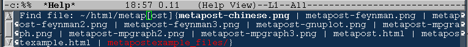
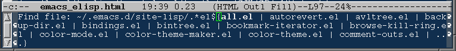
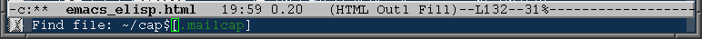
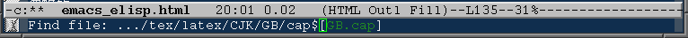
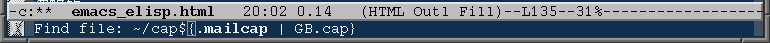
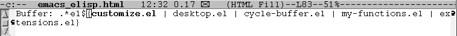
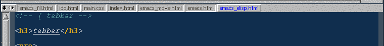
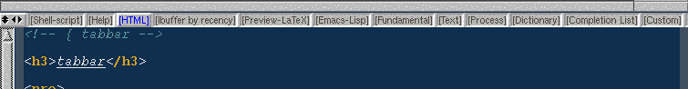
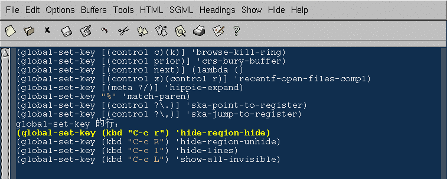

Emacs 具有超强的扩展性。这是当今没有任何其它编辑器可以比拟 的强大特点。这里介绍一些很方便的 Emacs Lisp 扩展。
有链接的文件可能不是 Emacs 自带的，你需要下载el文件到你的 load-path 中的一个目录里。
所有文件可以点击链接下载，你也可以点击这里一次性下载所有 el 文件，但是不包括大型的 elisp 包，比如 dictionary. [下载]。
这里提供的下载是我正在用的版本。我没有列出我找到它们的地址， 因为我记不住那么多。如果你需要最新的版本，请查看文件里的网址 到作者的主页。
每个标题后面的lisp代码是需要写到配置文件里的东西。
(require 'session) (add-hook 'after-init-hook 'session-initialize)
使用了这个扩展之后，你上次离开 Emacs 时的全局变量 (kill-ring，命令记录……)，局部变量，寄存器，打开的文件，修 改过的文件和最后修改的位置，…… 全部都会被记录下来。
加载了 session 之后菜单上会多两项：最近访问过的文件和最近 修改过的文件。看这个图 。
(load "desktop") (desktop-load-default) (desktop-read)
如果你想保存上次打开的文件记录，那么可以使用 desktop。这是 Emacs 自 带的。你只需要加入以上设置，然后 M-x desktop-save。以后 Emacs 启动时就会打开你上次离开时的所有 buffer.
M-x desktop-clear 可以删除记住的内容，你闲现在记住的 buffer 太多就可以采用这个办法。不过我还是建议用 ibuffer(见下) 来管理这些buffer，因为有时你会发现，如果删掉全部记住的buffer， 以后你需要一定的时间来打开你经常编辑的文件！
如果session跟desktop配合，下次启动Emacs 的时候，就像根本 没有关闭 Emacs 一样！多爽！
把这几行加入 .emacs 就可以把 C-x C-b 那个普通的 buffer menu 换成非常方便的 ibuffer 啦！
(require 'ibuffer) (global-set-key (kbd "C-x C-b") 'ibuffer)
使用了 desktop 之后有可能使你同时有几十个 buffer 同时打开 着。有时你想把其中一些关闭，有时你想在某些 buffer 里寻找某个 regexp。这个时候你可以用 ibuffer，它有跟 dired 相似的界面。 可以对 buffer 进行各种标记，排序，隐藏，查找，替换。非常好用。 看看这个抓图就是我限定显示 emacs-lisp-mode 和 c-mode 的 buffer，按 major mode 名称排序， 并做上一些记号的情况。
我常用的一个功能是，用 %-n 标记符合某种名字的 buffer，然 后按 "O" 在这些buffer里寻找我需要的字串。比如在所有打开的后 缀为 html 的 buffer 里寻找 "Emacs" 字样，得到如下结果。
(require 'browse-kill-ring) (global-set-key [(control c)(k)] 'browse-kill-ring) (browse-kill-ring-default-keybindings)
方便的在 kill-ring 里寻找需要的东西。
你是不是经常按 C-y 放进一个 kill-ring 里的单元。然后 M-y，M-y，…… 来寻找你需要的很久以前剪切下来的东西？很费事吧？用了 browse-kill-ring 就好了。你只需要把它绑定到一个热键，比如 C-c k: 就能出现这样一个buffer。[查看图形]
kill-ring 里的内容都可以方便的浏览，粘贴。具体操作请在这 个 buffer 里 C-h m 或者 ?.
你可能用过 iswitchb。但是当有很多buffer时，iswitchb 还是很慢。你可 以使用ido。这是我见过的最方便的切换buffer，寻找文件的扩展了。在你的 .emacs 文件里加入：
(require 'ido) (ido-mode t)ido 主要有两个界面：打开文件和切换buffer，它们之间可以随便切换。它的原 始的键设定不是很方便直观，所以我把它另外设置了一下。看这个列表。其实你从这个列表就可以看出 ido 的功能。 我这里只叙述一下基本的操作。
启动 ido-mode 以后，你可以在 C-x C-f 打开文件时得到一个如下的界面：

你开始输入文件名，前缀匹配的文件和目录都会列在光标后面的表里。目录 是红色的。
你可以使用 C-s，C-r 或者左右光标键在匹配的文件之间来回旋转，按上下 光标可以在匹配的目录名之间旋转。你可以按 TAB 补全名字，方括号里的内容 是你按 TAB 将会补全的字符。按 backspace 遇到目录名时，一次会吃掉整个目 录名，并且到达上一级目录。C-k 可以删除一个文件。别担心，当删除文件时， 你会被要求做出明确的回答。
如果你按 C-p 就会启动部分匹配，而不是严格前缀匹配。这时只要文 件名的一部分与你的输入匹配就会列在表中。
按 C-t 就会切换到正则表达式匹配方式，你输入的文字将被作为正则
表达式对文件进行匹配。比如我输入 ".*el$" 就可以得到所有以 "el" 结尾的
文件列表。

另外，C-c 和 C-a 分别切换大小写匹配和忽略某些文件。
你访问过的目录都会被 ido 记住，你可以按 M-up 和 M-down切换以前访问 过的目录，按 M-left 和 M-right 可以提出以前使用过的文件名。
按 C-b 就会切换到选择buffer模式。按 C-d 就会进入Dired.
注意，你如果要创建一个新的文件叫 "ab"，而你的目录里有匹配前缀的文件 或目录，RET 就会打开部分匹配的文件。所以这个时候你必须按 C-j 来创建这 样一个文件。如果没有匹配的文件，那么RET也会创建一个新的文件。
由于方向键，backspace 和 C-f, C-b 都被作为其它用途了，所以如果你想 把光标移动到行首修改一些东西，你必须按 C-e 进入编辑模式。
Emacs 打开文件的函数叫 find-file。这是很多人不理解的问题。下面我们 就能看到，有了 ido 之后，这个函数就名副其实了。当你输入了一个文件名或 者正则表达式，而在当前目录没有这样的文件，你就可以利用ido的查找功能了。 我举一个例子好了。
我经常同时编辑不同种类的文件，它们在系统里不同的目录中。它们的目录 名会被ido记住。这样我打开一个文件时，可以不管它在哪个目录。我只需要输 入它的名字。比如，我刚才已经打开了
~/html/emacs_elisp.html /usr/local/texlive/texmf-local/tex/latex/CJK/GB/c19fzhc.fd ~/.emacs.d/site-lisp/folding.el ....现在我想打开另一些
/usr/local/texlive/texmf-local/tex/latex/CJK/GB/目录下的 .cap 文件。我就在 C-x C-f 的界面按输入 "cap$"，然后打开正则匹配 和部分匹配，出现以下界面：
因为当前目录(PWD)下没有后缀是 fd 的文件，所以我按了一下 M-up，这下
成了这个样子：

显然它找到一个结尾是 "cap" 的文件，但是这不是我想要的，于是我继续按
一下 M-up 到再上面一个目录里去找。就成了这样：

这就是我需要的文件！想一想，你的当前目录不在那个地方，用别的办法打 开如此深一个目录里的文件需要花多少时间？
其实我们还有一个窍门，刚才如果在不能匹配的时候按 M-s，ido 就会把所
路径合并，找到匹配文件，然后给出一个列表：

切换 buffer 的界面也跟打开文件功能类似。不过少了一些文件特有的功能，
多了一些buffer特有的的功能。

打开文件时 C-k 是删除文件，现在 C-k 变成了关闭 buffer。如果你按 C-a 就会显示通常被忽略的 buffer。
如果不存在这样的的buffer，你可以直接回车新建一个buffer，也可以使用 C-f 切换到打开文件界面。
这个扩展功能实在太多，你看了我的叙述能够体会到它的方便了吧。但是实 际使用时，你很少能记住所有这些功能。最好是自己绑定键。在需要的时候可以 查询这个键绑定。就像我的这个键绑定。
最新的 ido 可以逐步筛选你需要的文件 (ido-restrict-to-matches)，你可以把这段代码加入你的 .emacs.
(require 'swbuff) (global-set-key (kbd "") 'swbuff-switch-to-previous-buffer) (global-set-key (kbd " ") 'swbuff-switch-to-next-buffer) (setq swbuff-exclude-buffer-regexps '("^ " "\\*.*\\*")) (setq swbuff-status-window-layout 'scroll) (setq swbuff-clear-delay 1) (setq swbuff-separator "|") (setq swbuff-window-min-text-height 1)
使用这个，你就可以方便的在最近编辑的 buffer 之间切换了。 切换的时候会出现一个小窗口显示附近的buffer，就像翻页一样。看 看抓图。
我把它绑定到了 C-prior 和 C-next，按起来很方便。而且你可 以用变量 swbuff-exclude-buffer-regexps 设定你不想看到的 buffer。它们不会出现在列表里。这个例子中我把所有名称开头是空 格的 buffer 和名字前后都是 "*" 的都排除在轮训以外，这样就可 以在不同的文件之间切换而不被恼人的临时 buffer 扰乱了。
一个很重要的变量是 swbuff-status-window-layout, 改变它的 值可以改变 swbuff 下面那个窗口的显示方式。
如果你的 buffer 很多，这个窗口可以长得很大。如果你把 swbuff-status-window-layout设为 'adjust，则不论什么时候都会 出现这样的大窗口，设为 'default 则只有单窗口时才出现大窗口。 虽然这个窗口只显示几秒钟，但是 我很讨厌一个那么大的窗口在我 面前一闪。现在如果你把它设为 'scroll，不论什么时候都只占用一 行。这样buffer太多时，那个窗口不会占用太多空间扰乱视线。
原来的 swbuff 有一个小小的 bug, 无论 swbuff-status-window-layout 是什么值，都会显示一个很大的窗口 显示所有的 buffer，这个文件是我修改过的版本。
swbuff-clear-delay 可以控制小窗口消失的延迟。
swbuff-window-min-text-height 可以控制小窗口的大小。如果 设为 0， 就不会打开小窗口了。
(require 'tabbar) (tabbar-mode) (global-set-key (kbd "") 'tabbar-backward-group) (global-set-key (kbd " ") 'tabbar-forward-group) (global-set-key (kbd " ") 'tabbar-backward) (global-set-key (kbd " ") 'tabbar-forward)
你曾经觉得 Windows 样式的编辑器上面的 tab 很好用吧？其实 Emacs 的更好，它不但可以把所有 buffer 列在 tab 上，而且根据 major mode 对 tab 进行分组。你可以用 customize-group RET tabbar RET 来设置它的选项。
我把Windows键盘上的 "Win" 键绑定到了这个功能，因为 tabbar 很像Windows 的风格。按 Win-left 和 Win-right 就会在同组 tab 之间切换，Win-up 和 Win-down 可以在分组之间切换。
看看下面几个图你就知道它如何好用啦！
显示 html mode 的分组：

分组列表

在不同的窗口里可以有独立的 tab。图片太大，要看的话点击这里
tabbar 有一个小小的 Hack, 可以使你更方便。
这个是 Emacs 自带的。M-x speedbar 就可以启动它。它可以让你 方便的浏览文件，你还可以显示文件里的标题，函数，变量……
在你编辑不同的文件时，它可以显示当前文件所在目录里的相关文 件和它们的信息，比如文件是否需要重新编译，elisp文件是否已 经编译，…… 等等。
你可以看看我的抓图。
(autoload 'table-insert "table" "WYGIWYS table editor")
非常酷的一个扩展。可以“所见即所得”的编辑一个文本模式的 表格。就跟很多字处理程序那样操作，可以识别文本文件里本来就存 在的表格，而且可以把表格输出为 HTML 和 TeX。看看我的抓图吧。
这个扩展可以帮你保存一个“最近打开的文件”列表。在 .emacs 文件里加 入：
(require 'recentf) (recentf-mode 1)你可以把不常用的C-x C-r 绑定到这样一个函数：
(defun recentf-open-files-compl ()
(interactive)
(let* ((all-files recentf-list)
(tocpl (mapcar (function
(lambda (x) (cons (file-name-nondirectory x) x))) all-files))
(prompt (append '("File name: ") tocpl))
(fname (completing-read (car prompt) (cdr prompt) nil nil)))
(find-file (cdr (assoc-ignore-representation fname tocpl)))))
(global-set-key [(control x)(control r)] 'recentf-open-files-compl)
这样你就可以 C-x C-r 然后 TAB 列出最近打开文件列表了。
你是不是觉得 Emacs 的“矩形区域操作”不太直观？使用这个包之后矩形 region会被真正显示成一个矩形。[查看图形]这 可以使你的矩形操作大大方便。
如果你已经有了一个 region。你可以使用 C-x r C-x 把它显示为一个矩形。 如果你刚开始设定一个矩形区域，你可以使用 C-x r 作为你的 set-mark-command 的前缀，比如 C-x r C-SPC。那么区域会被显示为矩形。
这个是 Emacs 自带的功能，可是知道它的人不多。很多人用的是M-/ (dabbrev-expand) 这样的东西。 hippie-expand 要强大的多。因为它可以使用 扩展函数任意扩充！你可以把你的 M-/ 绑定到 hippie-expand，马上就可以体 会到它的方便。
(global-set-key [(meta ?/)] 'hippie-expand)你可以设置以下 hippie-expand 的补全方式。它是一个优先列表， hippie-expand 会优先使用表最前面的函数来补全。通常我的设置是：
(setq hippie-expand-try-functions-list
'(try-expand-dabbrev
try-expand-dabbrev-visible
try-expand-dabbrev-all-buffers
try-expand-dabbrev-from-kill
try-complete-file-name-partially
try-complete-file-name
try-expand-all-abbrevs
try-expand-list
try-expand-line
try-complete-lisp-symbol-partially
try-complete-lisp-symbol))
这是说，首先使用当前的buffer补全，如果找不到，就到别的可见的窗口里寻找， 如果还找不到，那么到所有打开的buffer去找，如果还……那么到kill-ring里， 到文件名，到简称列表里，到list，…… 当前使用的匹配方式会在 echo 区域 显示。
特别有意思的是 try-expand-line，它可以帮你补全整整一行文字。我很多 时后有两行文字大致相同，只有几个字不一样，但是我懒得去拷贝粘贴以下。那 么我就输入这行文字的前面几个字。然后多按几下 M-/ 就能得到那一行。
这是一个很小的函数。你是不是觉得 Emacs 在匹配的括号之间来回跳转的时 候按 C-M-f 和 C-M-b 太麻烦了？vi的 % 就很方便，我们可以把 % 设置为匹配 括号。可是你想输入 % 怎么办呢？
一个很巧妙的解决方案就是，当 % 在括号上按下时，那么匹配括号，否则输 入一个 %。你只需要在 .emacs 文件里加入这些东西就可以达到目的：
(global-set-key "%" 'match-paren)
(defun match-paren (arg)
"Go to the matching paren if on a paren; otherwise insert %."
(interactive "p")
(cond ((looking-at "\\s\(") (forward-list 1) (backward-char 1))
((looking-at "\\s\)") (forward-char 1) (backward-list 1))
(t (self-insert-command (or arg 1)))))
有时你需要跳到另一个文件进行一些操作，然后很快的跳回来。你当然可以 使用 bookmark 或者寄存器。但是这些实在是太慢了。你多想拥有vi那样的 ma, mb, 'a, 'b 的操作。现在你可以用几行 elisp 达到类似的目的：
(global-set-key [(control ?\.)] 'ska-point-to-register)
(global-set-key [(control ?\,)] 'ska-jump-to-register)
(defun ska-point-to-register()
"Store cursorposition _fast_ in a register.
Use ska-jump-to-register to jump back to the stored
position."
(interactive)
(setq zmacs-region-stays t)
(point-to-register 8))
(defun ska-jump-to-register()
"Switches between current cursorposition and position
that was stored with ska-point-to-register."
(interactive)
(setq zmacs-region-stays t)
(let ((tmp (point-marker)))
(jump-to-register 8)
(set-register 8 tmp)))
当你按 C-. 时就做了一个记号。然后你可以到别处，按 C-, 就可以在这两点之
间来回跳转了。这虽然没有 vi 的 26 个 mark 多，但是你仔细想想，vi的26个
mark，你通常能用到几个？
(defun wy-go-to-char (n char)
"Move forward to Nth occurence of CHAR.
Typing `wy-go-to-char-key' again will move forwad to the next Nth
occurence of CHAR."
(interactive "p\ncGo to char: ")
(search-forward (string char) nil nil n)
(while (char-equal (read-char)
char)
(search-forward (string char) nil nil n))
(setq unread-command-events (list last-input-event)))
(define-key global-map (kbd "C-c a") 'wy-go-to-char)
非常感谢 Oliver Scholz 这个函数是一个 vi 的 "f" 命令的替代品。vi的用户知道，vi有
一个特别好的命令 "f"。当你按 "fx", x 是任意一个字符时，光标
就会移动到下一个 "x" 处。这之后只要按 ";"(分号)，光标就到再
下一个 "x"。
举个例子说明这个命令的用途。比如我们有这样一行字，光标在
行首。
我们希望迅速的到达最后那个 event 处，于是我在 vi 里按
"fe"。结果光标到了 "setq" 的那个 e 上面，这时候我接着按 ";",
不一会儿就到了我们想要的地方。很方便吧？可能起初不觉得，后来
你发现这真的非常好！
我一直觉得 Emacs 没有这样一个方便的命令，但是 Oliver 给了
我一个完美的答案：
有了这段代码之后，当你按 C-c a x (x 是任意一个字符) 时，光
标就会到下一个 x 处。再次按 x，光标就到下一个 x。比如 C-c a w
w w w ..., C-c a b b b b b b ...
我觉得这个方式比 vi 的 "f" 要快。
这两个包可以用来显示文件的行号。并且根据是否空行和文件行
的语法加亮显示不同的数字颜色。
看看我的抓图。
这两个函数可以分别把一个区域和匹配某个regexp的行都藏起来，
就跟不存在一样……这样你就可以对某些内容进行任意的操作而不会
影响到其它的部分。
hide-lines 在操作某些行的时候用起来特别方便。加一个前缀参
数可以把不匹配的行都藏起来，只看到匹配的！看看我只显示这个文
件里含有global-set-key 的行：
我的 folding 配置很长，要看请点击这里。
我编辑了这么长一个 HTML 文件，你觉得一定很费力，不容易定
位吧？其实我的屏幕看起来就是这
个样子。所有小节都被我折叠了起来，我很容易就可以调换小节
的位置。我刚才把folding的大段的配置代码移动到了另一个文件，
就像移动了一行。
folding 根据不同的文档有不同的标记，它都是基于注释的。本
网页就是这样一个例子。
把语法加亮的文件输出成彩色 HTML 文件。看看这个例子。
连接到 dict 协议服务器，并且查询单词含义。按 C-c d 查询道当
前单词，按 C-c m 在字典里查找一个匹配的单词，鼠标邮件点击单词
会弹出菜单。还有 tooltip 功能！非常好用！你可以看看我的屏幕截图。
你可以在自己机器上安装一个 dictd。这样就不需要连到很远的服
务器查字典了。
Emacs 提供给你所有的配色机制，可是由于你的艺术细胞不够，经常为找不
到好的配色方案而烦恼。使用这个包就可以方便的改变你的 Emacs 的配色方案
啦！看看我的屏幕抓图 [1] [2] [3]
它提供了50种以上的配色方案。你只需要把：
如果你想选定一个配色方案后就一直用它，而避免每次都加载大量用不着的
lisp代码，按 p 就可以把当前配色方案的 lisp 打印出来，你可以把它加到你
的 .emacs 文件。而不使用 (require 'color-theme) 这样可以加快启动速度。
这个扩展可以把 Emacs 变成一个图片浏览器。看看抓图吧。
你想过一个 buffer 里同时存在很多个 major mode 吗？现在用
MMM 就可以办到了。在不同的区域拥有对应键绑定，变量，缩进 ……
看看我的抓图，HTML, Emacs
Lisp, Perl, C 和 LaTeX 全都都在同一个 buffer 里被正确的语法
加亮了！而且TAB在不同的区域都可以进行正确缩进。在 LaTeX 的区
域还可以使用 AUC TeX 来处理某个部分。
当然我现在是在滥用这个模式。如果你有嵌入 HTML 的
JavaScript 或 CSS2, PL/SQL，……这个就有用了。
我可以使用这个扩展来处理 CWEB 程序。最外面的 major mode
用 cweb-mode, 里面的 TeX 和 C 的区域就使用它们各自的TeX-mode
和 c-mode。看起来就像这个样子
。
看到这个名字你还以为是一个 TeX 发行吧？它不是一个 TeX 发
行，而是一个专门用来帮助作者写 TeX/LaTeX 文档的工具。它大大
加强了 LaTeX 用户的能力。你写文档时能够只 TeX 一个你觉得需要
看到效果的 region 的内容，而不必等待漫长的编译过程啦！
可以把 LaTeX 文档的效果插入到文档里，形成一个预览，与你的
原文件一一对照。非常方便。你可以看看我的抓图：
注意要用这个包，你必须安装 TeX 系统和 AUCTeX.
ctypes 可以识别你的 C 文件里的类型定义 (typedef)。自动对
它们进行语法加亮。
ECB(Emacs Code Browser) 是一个代码浏览器，它依赖于Semantic
和Eieio。
它们组合可以实现很好的文法分析的代码浏览。ECB 在 Semantic
和 Eieio 的支持下，可以识别许许多多种计算机语言，C, C++,
Java, Elisp, ...
看看这个抓图。
用来制作 WiKi 的包。非常方便。看看我的抓图。
这上面的只是我自己的设定，你要根据自己的情况修改。
我写了一个简要的 WiKi 说明在 这
里。
更多的信息请参考 http://repose.cx/emacs/wiki/。
(setq unread-command-events (list last-input-event)))
^^^^^
setnu和setnu-plus
hide-region.el 和
hide-lines.el

;;hide region
(require 'hide-region)
(global-set-key (kbd "C-c r") 'hide-region-hide)
(global-set-key (kbd "C-c R") 'hide-region-unhide)
;; hide lines
(require 'hide-lines)
(global-set-key (kbd "C-c l") 'hide-lines)
(global-set-key (kbd "C-c L") 'show-all-invisible)
folding.el
htmlize.el
dictionary
[本地下载][来源地]
(autoload 'dictionary-search "dictionary"
"Ask for a word and search it in all dictionaries" t)
(autoload 'dictionary-match-words "dictionary"
"Ask for a word and search all matching words in the dictionaries" t)
(autoload 'dictionary-lookup-definition "dictionary"
"Unconditionally lookup the word at point." t)
(autoload 'dictionary "dictionary"
"Create a new dictionary buffer" t)
(autoload 'dictionary-mouse-popup-matching-words "dictionary"
"Display entries matching the word at the cursor" t)
(autoload 'dictionary-popup-matching-words "dictionary"
"Display entries matching the word at the point" t)
(autoload 'dictionary-tooltip-mode "dictionary"
"Display tooltips for the current word" t)
(autoload 'global-dictionary-tooltip-mode "dictionary"
"Enable/disable dictionary-tooltip-mode for all buffers" t)
(global-set-key [mouse-3] 'dictionary-mouse-popup-matching-words)
(global-set-key [(control c)(d)] 'dictionary-lookup-definition)
(global-set-key [(control c)(s)] 'dictionary-search)
(global-set-key [(control c)(m)] 'dictionary-match-words)
;; choose a dictionary server
(setq dictionary-server "localhost")
;; for dictionary tooltip mode
;; choose the dictionary: "wn" for WordNet
;; "web1913" for Webster's Revised Unabridged Dictionary(1913)
;; so on
(setq dictionary-tooltip-dictionary "wn")
(global-dictionary-tooltip-mode t)
;(dictionary-tooltip-mode t)
color theme
(require 'color-theme)
加入到 .emacs 文件。使用 M-x color-theme-select 就会出现一个配色方案选
择窗口，在配色方案上按 l 就可以改变当前 frame 的配色，按 i 就可以改变
所有 frame 的配色。
thumbs
mmm
(autoload 'mmm-mode "mmm-mode" "Multiple Major Modes" t)
(autoload 'mmm-parse-buffer "mmm-mode" "Automatic MMM-ification" t)
AUCTeX
preview-latex
ctypes.el
(require 'ctypes)
(ctypes-auto-parse-mode 1)
ECB
Emacs
Wiki
(require 'emacs-wiki)
(add-hook 'emacs-wiki-mode-hook
(lambda ()
(define-key emacs-wiki-mode-map (kbd "C-c C-h") 'emacs-wiki-preview-html)
(define-key emacs-wiki-mode-map (kbd "C-c C-c") 'emacs-wiki-preview-source)
(define-key emacs-wiki-mode-map (kbd "C-c C-v") 'emacs-wiki-change-project)
))
;; (setq emacs-wiki-grep-command "glimpse -nyi \"%W\"")
(setq emacs-wiki-publishing-directory "publish")
(setq emacs-wiki-directories '("~/WiKi"))
(setq emacs-wiki-meta-charset "gb2312")
(setq emacs-wiki-style-sheet
"")
(setq emacs-wiki-inline-relative-to 'emacs-wiki-publishing-directory)
(defun emacs-wiki-preview-source ()
(interactive)
(emacs-wiki-publish-this-page)
(find-file (emacs-wiki-published-file)))
(defun emacs-wiki-preview-html ()
(interactive)
(emacs-wiki-publish-this-page)
(browse-url (emacs-wiki-published-file)))
(setq emacs-wiki-projects
`(("default" . ((emacs-wiki-directories . ("~/WiKi"))))
("work" . ((fill-column . 65)
(emacs-wiki-directories . ("~/workwiki/"))))))
返回
{kind=link}
{kind=link}
{kind=link}
{kind=link}
{kind=link}
{kind=link}
{kind=link}
{kind=link}
{kind=link}
{kind=link}
{kind=link}
{kind=link}
{kind=link}
{kind=link}
{kind=link}
{kind=link}
{kind=link}
{kind=link}
{kind=link}
{kind=link}
{kind=link}
{kind=link}